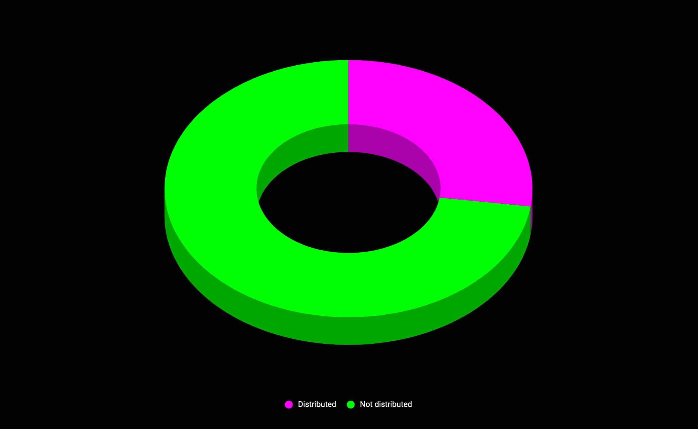

Takeoff results
by savetheales on 2020-12-04
The takeoff donation round is over! A huge thank you and a shoutout to all those that took part in the donation round, your contribution to the Great Web is more than just significant!
15,088.40963ATOM out of300,000have been donated. This accounts for5.03%out of the target sum56Cosmos addresses participated in the takeoff and won~12,1TCYB out of100TCYB- The rewards for disciplines that were dependent on the takeoff results are
~1.9TCYB out of38TCYB 56Cosmos addresses participated in the takeoff and will share the bonus of~100TEUL out of~240TEUL for the final of the Game of Links
Thanks to your contributions the cyber~Congress DAO was able to function since Apr 2020. After payouts to evangelists and team members, we will be able to sustain the DAO until Mar 2021. Of course, that is not what we dreamt of, but its definitely more than zero. During the takeoff, about half of the sum, was donated by DAO members and their friends. The other half was donated by our awesome community. To us, this is proof that we are heading in the right direction. May the force be with you.
EUL tokens
According to Cybers whitepaper :
In addition to CYB tokens, Game of Links allocates test EUL tokens to all Takeoff donors for the final
This means an extra bonus for donors, paid out in EUL tokens proportionally per the donated ATOMs. EUL tokens are distributed from the cyber~Congress multisig address in euler-6 network. Check your balances.
The second transaction is the cashback bonus for evangelists. The teams incentives, outlined in our documents, will also be included in that transaction.
CYB tokens
Some discipline rewards were dependent on the takeoff results:
| Discipline | ~ GCYB |
|---|---|
| relevance | 1006 |
| load | 503 |
| delegation | 251 |
| lifetime | 151 |
| total | 1911 |
The result of two disciplines, the full validator set and the community pool, will remain unknown until the end of the Game of Links.
According to paragraph 17 of the Game of Links and Cybers whitepaper:
All CYB tokens that remain from the Takeoff, are allocated to the community pool at the end of the game. All CYB tokens that remain from the disciplines are allocated to cyber~Congress.
The closing price of the round is 1.485 ATOM/GCYB. This means that we’re closing the takeoff donation round with a market cap of ~1,485,000 ATOMs or ~ 13,384 ETH. The price of the GCYB at the end of takeoff is 0.013385 ETH.
Distribution of a PoS-like blockchain is pretty complex. Currently, we have distributed 27.21% of the genesis supply.

Our key findings from the takeoff, is that public funding are not optimal for initial distribution. We are going to significantly update the distribution rules and propose them to the chain governance.
The final
According to the rules of the Game of Links, the final of the game should start after the end of the takeoff and last for a period of 21 days. But we feel that it needs more time. Soon, we will publish a governance proposal for updating provisions and further details.
At the time of the final, you should play at your best if you want to get your hands on more distribution of the future mainnet, aka more CYB tokens. Distributed EUL tokens will help you to achieve your goals and will probably play a significant role in the results of the Game.
Good luck Heroes and Masters of the Great Web! Code speed.